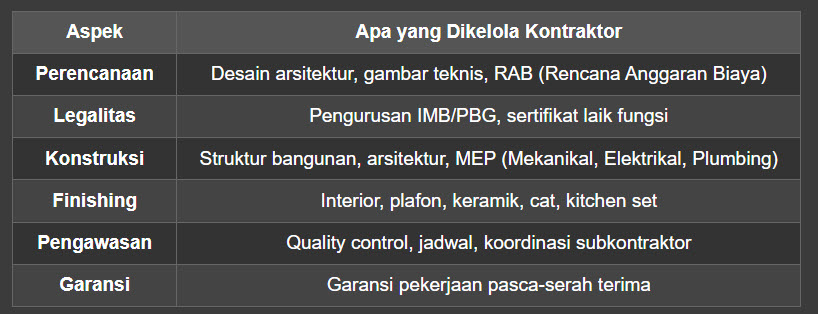
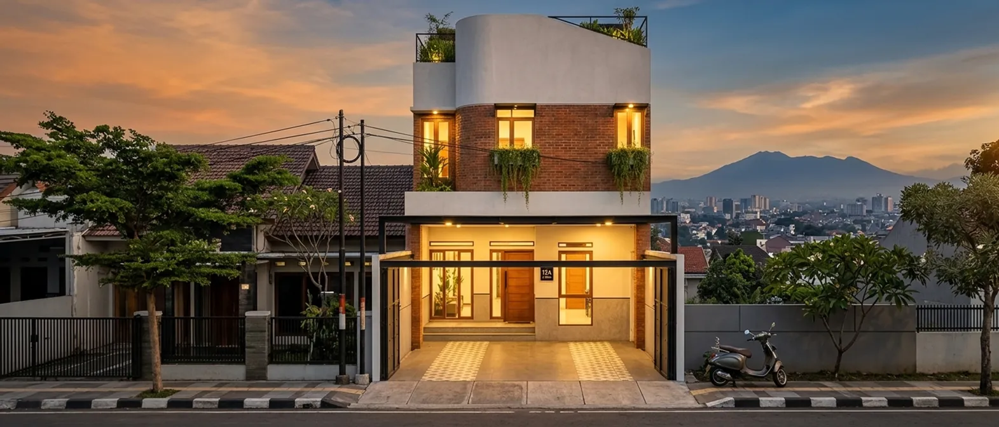
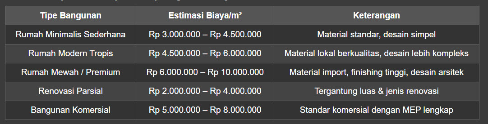

Bandung — Kota Kembang yang terus berkembang pesat, baik dari sisi infrastruktur maupun properti. Setiap tahun, ribuan hunian, gedung perkantoran, ruko, hingga fasilitas komersial baru dibangun di Bandung dan sekitarnya. Tapi di balik setiap bangunan kokoh dan estetik, ada satu faktor kunci yang menentukan segalanya: pilihan jasa kontraktor terpercaya di Bandung.
Jika Anda sedang mencari jasa kontraktor terpercaya di Bandung untuk membangun rumah impian, merenovasi kantor, atau mengerjakan proyek komersial, Anda sudah berada di tempat yang tepat. Artikel ini akan membahas TUNTAS mulai dari kriteria kontraktor profesional, tips memilih, estimasi biaya, hingga rekomendasi penyedia jasa terbaik di Bandung.
📌 Mengapa Memilih Jasa Kontraktor Terpercaya di Bandung Itu Krusial?
Mungkin Anda berpikir, "Ah, bangun rumah mah tinggal cari tukang bangunan biasa aja."
Faktanya: Proyek konstruksi tanpa kontraktor profesional adalah salah satu penyebab utama pembengkakan biaya (cost overrun), keterlambatan proyek, dan kualitas bangunan yang mengecewakan.
Seorang kontraktor bukan sekadar "mandor proyek". Mereka adalah project manager profesional yang mengelola:

Memilih jasa kontraktor terpercaya di Bandung artinya Anda berinvestasi pada ketenangan pikiran. Tidak ada lagi cerita proyek molor, material tidak sesuai spek, atau biaya membengkak di tengah jalan.
🏆 7 Kriteria Jasa Kontraktor Terpercaya di Bandung
Agar tidak salah pilih, berikut adalah kriteria mutlak yang harus dimiliki kontraktor andalan Anda:
1. Legalitas Jelas (PT/CV Resmi)
Kontraktor profesional memiliki badan usaha yang sah (PT atau CV), dilengkapi SIUJK, SBU LPJK, dan terdaftar di asosiasi seperti GAPENSI atau AKI.
2. Portofolio Proyek Nyata & Bisa Diverifikasi
Jangan hanya percaya kata-kata. Minta portofolio proyek sebelumnya—lengkap dengan foto before-after, lokasi, dan testimoni klien. Kontraktor terpercaya selalu bangga menunjukkan hasil kerja mereka.
3. Transparansi Biaya & RAB Detail
Kontraktor profesional akan memberikan RAB (Rencana Anggaran Biaya) yang sangat detail—mulai dari harga material per item, upah tukang, hingga biaya tak terduga. Tidak ada biaya tersembunyi.
4. Sistem Kontrak Tertulis & Jelas
Setiap proyek harus memiliki surat kontrak resmi yang mencantumkan:
- Lingkup pekerjaan (termasuk gambar dan spesifikasi teknis)
- Jadwal pelaksanaan (milestone proyek)
- Total biaya dan termin pembayaran
- Klausul denda keterlambatan (jika ada)
- Garansi pekerjaan (biasanya 6-12 bulan)

5. Tim Profesional & Berpengalaman
Lihat siapa saja tim di belakangnya. Kontraktor andal memiliki arsitek, drafter, insinyur sipil, dan tenaga kerja yang berpengalaman.
6. Memahami Regulasi & Kontur Tanah Bandung
Ini yang membedakan kontraktor lokal dengan luar kota. Kontraktor Bandung tahu betul:
- Peraturan daerah tentang KDB (Koefisien Dasar Bangunan) dan GSB (Garis Sempadan Bangunan)
- Kontur tanah Bandung yang berbukit dan beragam
- Sistem drainase untuk menghadapi curah hujan tinggi
- Harga & akses material bangunan lokal
7. Garansi & Layanan Purna Jual
Kontraktor terpercaya berani memberikan garansi untuk hasil pekerjaan mereka. Jika ada kerusakan dalam masa garansi (misal: bocor, retak, atau masalah struktur), mereka akan perbaiki gratis.

🛠️ Layanan yang Ditawarkan Jasa Kontraktor di Bandung
Kontraktor di Bandung umumnya menawarkan layanan lengkap, antara lain:
✅ Jasa Bangun Rumah Baru
Dari desain minimalis, tropis modern, industrial, hingga gaya arsitektur klasik khas Bandung.
✅ Renovasi & Rénovasi Total
Baik renovasi sebagian (kamar mandi, dapur, fasad) maupun renovasi total (rombak total).
✅ Desain & Bangun (Design & Build)
Konsep satu atap: arsitek dan kontraktor dalam satu tim. Lebih efisien dan hasilnya lebih terintegrasi.
✅ Interior & Furnitur
Termasuk plafon gypsum, partisi, kitchen set, lemari built-in, dan furniture custom.
✅ Bangunan Komersial
Ruko, kantor, kafe, restoran, klinik, hingga fasilitas pendidikan dan kesehatan.
✅ Pekerjaan Sipil & Infrastruktur
Drainase, pagar, kanopi baja ringan, tralis, dan landscape.
💰 Estimasi Biaya Jasa Kontraktor di Bandung (2026)
Sebagai gambaran, berikut estimasi biaya konstruksi per meter persegi di Bandung untuk tahun 2026:

⚠️ Catatan: Biaya ini bisa berubah tergantung spesifikasi material, tingkat kesulitan desain, dan kontur tanah. Selalu minta RAB gratis dari beberapa kontraktor untuk perbandingan.
🧠 Tips Memilih Jasa Kontraktor Terpercaya di Bandung (Step by Step)
Ikuti 7 langkah berikut agar Anda tidak salah pilih:
Langkah 1: Riset & Kumpulkan Nama Kontraktor
Cari referensi dari Google, media sosial, forum properti, atau rekomendasi teman/keluarga yang pernah membangun di Bandung.
Langkah 2: Cek Legalitas & Sertifikasi
Pastikan kontraktor memiliki:
- Akta pendirian PT/CV
- NIB (Nomor Induk Berusaha)
- SIUJK & SBU yang masih berlaku
- Domisili usaha yang jelas di Bandung
Langkah 3: Minta Portofolio & Referensi
Jangan sungkan minta foto proyek sebelumnya dan nomor kontak klien yang bisa dihubungi. Klien puas pasti dengan senang hati memberikan testimoni.
Langkah 4: Bandingkan Minimal 3 Penawaran
Mintalah RAB gratis dari 3 kontraktor berbeda. Bandingkan:
- Detail item pekerjaan
- Harga material & upah
- Jadwal proyek
- Garansi & layanan purna jual
Langkah 5: Tanyakan Proses Kerja
Kontraktor profesional memiliki SOP (Standar Operasional Prosedur) yang jelas:
- Survey lokasi & konsultasi desain
- Pembuatan RAB & jadwal
- Tanda tangan kontrak
- Pelaksanaan konstruksi dengan quality control
- Serah terima & garansi
Langkah 6: Datang Langsung ke Proyek (Bila Perlu)
Jika memungkinkan, kunjungi salah satu proyek yang sedang dikerjakan. Lihat sendiri kualitas pengerjaan, kerapihan, kedisiplinan tim, dan manajemen material.
Langkah 7: Percaya Insting & Komunikasi
Pilih kontraktor yang responsif, jujur, dan mudah diajak diskusi. Komunikasi yang baik adalah fondasi proyek yang sukses.

🏢 Rekomendasi Jasa Kontraktor Terpercaya di Bandung
Berdasarkan hasil riset dan reputasi, berikut beberapa jasa kontraktor terpercaya di Bandung yang patut Anda pertimbangkan:
NW28 (CV Natawira Dwi Ashta) adalah salah satu jasa kontraktor terpercaya di Bandung yang telah membuktikan diri sebagai specialized, design-sensitive contractor — sebuah moto yang bukan sekadar slogan, melainkan fondasi dari setiap proyek yang mereka kerjakan. Berbeda dengan kontraktor konvensional yang hanya fokus pada aspek teknis pembangunan, NW28 mengedepankan pendekatan Design & Build terintegrasi penuh, di mana arsitektur, struktur sipil, dan interior dikerjakan dalam satu atap dengan koordinasi yang ketat dan presisi tinggi. Spesialisasi utama mereka meliputi pembangunan rumah tinggal, desain arsitektur modern, interior custom (seperti kitchen set, lemari built-in, TV backdrop, dan furniture tailored), serta — yang menjadikan mereka unik — pembangunan lapangan padel berskala profesional. Ya, NW28 adalah salah satu dari segelintir kontraktor di Bandung yang berpengalaman dalam membangun lapangan padel standar turnamen, lengkap dengan struktur baja, sistem pencahayaan, pagar pengaman, dan lantai sintetis berkualitas tinggi. Ini membuktikan bahwa NW28 bukan sekadar kontraktor rumah biasa, melainkan mitra konstruksi yang mampu menangani proyek spesifik dengan tingkat kerumitan tinggi, baik untuk kebutuhan residensial, komersial, maupun fasilitas olahraga.
Yang membedakan NW28 dari kontraktor lain adalah kecintaan mereka terhadap detail desain dan kepekaan estetika yang tertanam di setiap tahap pengerjaan. Mulai dari konsultasi awal, pembuatan 3D visualisasi dan virtual tour, penyusunan RAB yang super transparan, hingga eksekusi di lapangan — setiap langkah dikelola secara profesional dengan single-point responsibility, artinya klien tidak perlu bolak-balik koordinasi antara arsitek, kontraktor, dan tukang. Tim NW28 terdiri dari arsitek muda berbakat, insinyur sipil berpengalaman, desainer interior kreatif, dan tenaga lapangan yang terlatih. Mereka juga menggunakan sistem kontrak turnkey fixed-price (lump-sum), sehingga klien tahu persis berapa biaya yang harus dikeluarkan dari awal hingga akhir tanpa khawatir biaya mendadak membengkak. Layanan mereka juga mencakup pengurusan IMB/PBG, pengawasan proyek dengan kurva S (jadwal detail), dan garansi pekerjaan pasca-serah terima. Reputasi mereka dibangun dari testimoni klien yang puas — banyak di antaranya kembali menggunakan jasa NW28 untuk renovasi lanjutan atau proyek properti baru. Dengan kantor pusat di Bandung dan jangkauan proyek hingga Jakarta, NW28 menjadi pilihan tepat bagi Anda yang mencari kontraktor yang tidak hanya kuat secara teknis, tapi juga peka terhadap keindahan desain, fungsionalitas ruang, dan kepuasan klien jangka panjang.
🌟 Kesimpulan: Investasi Terbaik Adalah Memilih Kontraktor yang Tepat
Membangun rumah atau properti adalah investasi besar—baik dari segi biaya, waktu, maupun emosional. Kesalahan dalam memilih jasa kontraktor terpercaya di Bandung bisa berakibat fatal: biaya membengkak, proyek molor, atau hasil akhir yang mengecewakan.
Oleh karena itu, jangan pernah memilih kontraktor hanya karena:
- ❌ Harga paling murah
- ❌ Kenalan atau teman saudara
- ❌ Janji muluk tanpa portofolio jelas
Sebaliknya, pilihlah kontraktor yang:
- ✅ Legalitas jelas
- ✅ Portofolio nyata
- ✅ RAB transparan
- ✅ Kontrak tertulis
- ✅ Garansi pekerjaan
- ✅ Komunikasi baik
Ingat: Harga kontraktor bukanlah biaya — itu adalah investasi untuk kualitas, ketepatan waktu, dan ketenangan pikiran Anda.
📞 Siap Membangun? Mulai Konsultasi Gratis Sekarang!
Jika Anda sedang mencari jasa kontraktor terpercaya di Bandung, jangan ragu untuk menghubungi NW28 ID menyediakan konsultasi gratis dan survei lokasi tanpa biaya.
💡 Langkah selanjutnya:
- Catat kebutuhan bangunan Anda (luas, jumlah lantai, gaya desain, estimasi budget)
- Hubungi 2-3 kontraktor untuk konsultasi gratis
- Bandingkan penawaran RAB dan jadwal
- Pilih kontraktor yang paling sesuai dengan kebutuhan dan budget
Selamat membangun! 🏗️ Rumah impian Anda bukan lagi sekadar mimpi—dengan kontraktor yang tepat, semuanya menjadi nyata.